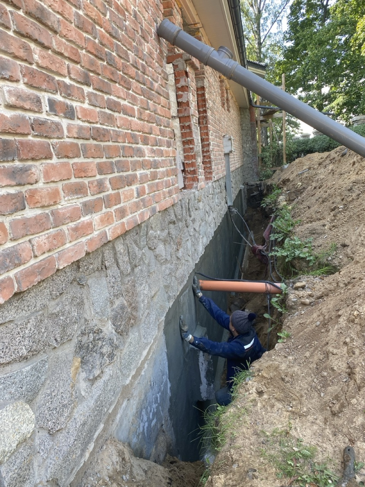

Защищаем фундамент от грунтовых и талых вод, сырости и разрушения бетона. Продлеваем срок службы дома в целом.
Гидроизоляция фундамента — это один из важнейших этапов обеспечения устойчивости и долговечности здания. Она повышает прочность и надежность конструкции, защищает от промерзания, негативного воздействия осадков, грунтовых вод и перепадов температур. Предотвращает растрескивание фундамента, появление плесени и грибка, протечки в подвалах и цокольных этажах, что увеличивает эксплуатационные сроки дома в целом.
В зависимости от конструкции фундамента, состояния бетона и уровня грунтовых вод мы применяем два основных вида гидроизоляции — обмазочную и проникающую. На сложных участках их часто комбинируют, чтобы надежно защитить конструкцию и снаружи, и в толще бетона.
Наносится на поверхность фундамента и образует сплошной бесшовный водонепроницаемый барьер. В работе мы используем современные полимерцементные, эластичные двухкомпонентные и битумно-полимерные составы — они плотно сцепляются с основанием, перекрывают микротрещины и выдерживают сезонные подвижки грунта. Обмазочная гидроизоляция подходит для монолитных бетонных фундаментов, стен из блоков ФБС и кирпичной кладки, а также для надежной обработки углов и сложных примыканий.
В отличие от поверхностных покрытий, проникающий состав работает внутри самой структуры бетона. Его активные компоненты уходят вглубь пор и капилляров, вступают в реакцию с влагой и солями и образуют нерастворимые кристаллы, которые полностью перекрывают путь воде даже при высоком давлении грунтовых вод. Бетон при этом становится плотнее и долговечнее, но сохраняет паропроницаемость. Такой способ применяется для монолитных фундаментов и конструкций из блоков ФБС — причем работы можно выполнять как снаружи, так и изнутри помещения без откапывания дома.
Отдельное внимание при любом виде работ уделяем швам, трещинам и примыканиям: проблемные участки расшиваем, заполняем ремонтным составом и обязательно выполняем инъектирование, чтобы полностью исключить проход воды в слабых местах.